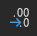

1. Import Queue and Case Review
Setting-up the Import Queue
You may either create a dedicated case import queue or add the import case to your existing personal queue.
How to create a personal import queue?
- Select the main import queue
- Clone the queue and assign your preferred name
- Save the newly created queue
- Ensure all necessary filters are applied (see below)
- (1) Filter by Owner = My cases
- (2) Status = not equal to Closed
- (3) Case reason = Review Import
- (4) Case Owner Alias = Retrieve the Alias in the Settings under the section "View Profile" in Salesforce
Case Types and Requirements to Process
There are two distinct import case types:
Case Creation Guidelines
- The CSM must indicate the import type PR or SR
- Each import requires a separate case (One for the Service Review and one for the Product Reviews)
- One import per channel ID per type
2. Data Validation Procedure
Pre-import Verification
Check for Previous Imports:
- Access the MetaBase Reviews table and filter the "client" column
- Search for "REVIEW_IMPORT_FILE_UPLOAD"
- For recent imports, please refer to the integration note in the case
Channel ID Verification
- Verify the channel ID in the provided file matches the 'eTrusted channel reference' field in the Shop detail window in Salesforce
- If discrepancies exist, use the channel ID from the Shop details window
- Check if the domain filled in the file matches the one from the shop details window in Salesforce. If there is a discrepancy, please go to the Account details section in the case and retrieve the correct domain and replace it in the Shop details window in Salesforce
Data Review Process
3. Service Review Import Specification
Required Fields (No Blank Values Permitted)
Field-Specific Guidelines
*review.locale
- Multiple locales may be present (e.g., en_GB, nl_NL) in the customer's file
- Filter the column and select the locale specified in shop details under Target Market (Link Generator)
- Process the import and notify the CSM accordingly that import were processed for locale linked to the channel.id only
GOOD TO KNOW: It might happen that the ratings are not from 1 to 5 but from 1 to 10, therefore you must use the columns AC, AD, AE of the Service_Reviews_Import_Template with the predefined formula to convert the rating to 1 to 5.
IMPORTANT: WE DO NOT ACCEPT TRANSLATED REVIEWS FROM ONE DOMAIN TO ANOTHER. That means if the customer has two domains registered with us he cannot have for example French reviews translated and being imported for the Italian domain.
***transaction.reference
If customer-provided file if the "transaction references" cells contain blanks, replace the blank entries with random transaction references that are automatically created using the formula in the import formatting file.
Review.submitted and review.replyOn
- The review.submitted
- First copy the dates
- Go to the tab "Time converter"
- Paste the selected date in the cell A2
- Choose the developer tool in the Excel toolbar
- Click on Macro
- For the review.submitted: Select the Macro named: "ConvertDatesInTableToStandardFormat" and click 'Run'
- Check then in the Service Reviews tab if the review.submitted converted dates are not in the future, for that filter the column 'O', if you see 'Future', please apply changes manually
- The review.replyOn
- First copy the dates
- Go to the tab "Time converter"
- Paste the selected date in the cell A2
- Choose the developer tool in the Excel toolbar
- Click on Macro
- For the review.replyOn: Select the Macro named: "ConvertDatesInTableToStandardFormatsReply" and click 'Run'
- Check then in the Service Reviews tab if the review.replyOn converted dates are in the future, for that filter the column 'U', if you see 'Future', please apply changes manually
HOW TO CONVERT THE DATE (VIDEO)
Special Import as verified reviews
4. Product Reviews Import Specification
Required Fields (No Blank Values Permitted)
*Field specifications align with service review requirements outlined above
6. Quality Control
Back to Top- If any required data is missing from specified columns, reject the file and inform the CSM with detailed feedback regarding the deficiencies identified
- GTIN value: After formatting the file from Google, some GTIN values will look like "81245+12". If that happens, select the GTIN column, then in the Excel Ribbon in the 'General' section, select the dropdown menu arrow, then select "Number", and click the decimal reduction button  until the 0 from the right disappears
7. General Data Integrity
Data Validation Requirements
Special Character Detection:
- Thoroughly review all files for special characters
- If uncertain about character validity, follow the established special character identification procedures
- Return the case to the CSM with detailed feedback if special characters are detected
Date Validation:
- All dates provided in the import file must reflect past dates only
- Future dates are not acceptable and must be modified manually
8. Import Process
Step 1: Folder Structure Creation
- 1Extract Shop Domain: Copy the shop domain name from the Salesforce case details
- 2Create Directory: Create a new folder using the copied shop domain name
-
3File Management:
- Save the import file into the newly created folder
- Name the file using the format: domainName_Locale_1
- Save in CSV UTF-8 format
Step 2: Google Sheets Data Cleanup
- 1File Upload: Open Google Sheets and import the newly created file via drag-and-drop
- 2Link Removal: Select all content (click top-left corner), right-click and select "Remove link"
-
3Text Formatting:
- Access Find & Replace function
- Use the formula: (\r\n|\n|\r)
- Click "Find"
- If no results found, click "Done"
- If results are found, click on "Replace all"
- 4File Export: Download the processed file in CSV format and save with "_G" suffix in the import folder
- 5IMPORTANT: Please make sure that the review.title and the review.comment does not contain any 0 (zero) value or the #NAME
9. Import Completion and Case Management
Salesforce Case Documentation
Case Integration Notes:
Add comprehensive comment to the Salesforce case confirming import completion
Integration Notes Update:
- Your name
- Import completion date
- Import type confirmation (SR/PR)
Administrative Tasks
-
Import Report Tracking:
- Access the dedicated case tracking file
- Apply appropriate filters
- Complete "Closed by 1st level" field
-
Case Closure:
- Close the Salesforce ticket
- Return the completed case to the assigned CSM
10. Review Import Report
♨️ Please click on "Sign in" below to access the import report
- Once signed in open the report by clicking on the first right hand side icon on the corner of the frame.
- The report should open on the Sharepoint directly
- On the right corner look for the "Viewing" button. Click it and select "Open in Desktop"
- The file will open the Excel on your Laptop
- Now you can filled in the report and follow the instructions provided during the Onboarding import training
To be able to update the report correctly, you need to make sure that you are connected to the "Salesforce connector" in Excel. For that you need to click on the "refresh all" button in Excel. Right after, you are being asked to signin. Then, click on the 'Use Custom Domain'. Enter "trustedshops.me.salesforce.com". Then click on the Single sign in option